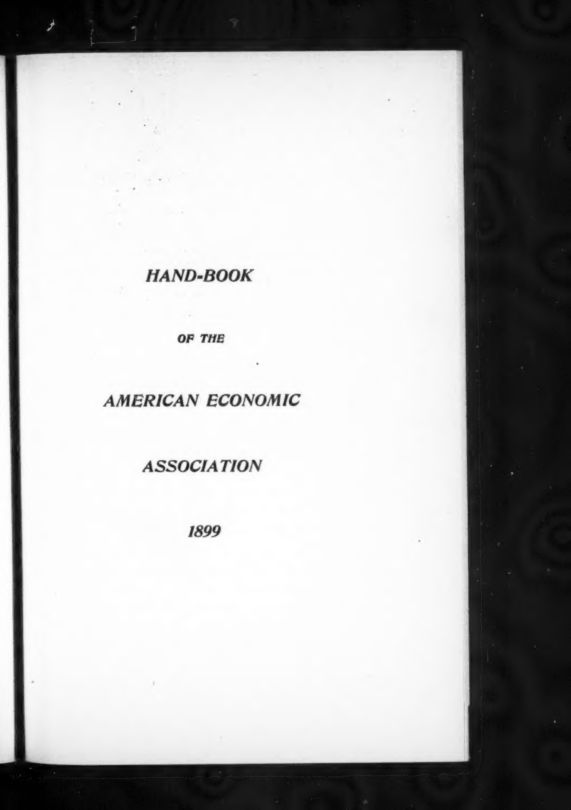

Manual de 1899 e a reunião de New Haven: capital, cidades e moeda
Leitura: 6 min
O suplemento de 1899 traz o manual da associação e os resumos da reunião de New Haven: estatísticas de capital e de finanças municipais, o Tesouro de 1893–97, preços na Confederação e tributação de bondes.


Henry W. Lamb levantou-se na sessão de 28 de dezembro de 1898, em New Haven, e se apresentou como uma das vítimas de Horace G. Wadlin: um dos industriais de Massachusetts que respondiam havia anos aos seus questionários. A pergunta em debate era se é possível obter estatísticas do capital empregado na indústria. Lamb achava que sim, desde que se perguntasse só o que o fabricante pode responder com exatidão: instalações, matérias-primas e produtos em estoque num dia determinado.
A discussão está no suplemento ao nº 2 do quarto volume dos Economic Studies, de abril de 1899, que reúne o manual da American Economic Association e o relatório da décima primeira reunião anual, realizada com a Universidade Yale de 27 a 29 de dezembro de 1898. A American Historical Association reuniu-se na mesma cidade, de quarta a sexta-feira. O discurso presidencial de Hadley e os relatórios dos comitês sobre o censo e a moeda saíram no nº 1; aqui estão o programa, as decisões do Conselho e os resumos dos trabalhos e debates.
Como estava a associação?
O manual descreve uma associação formada sobretudo por professores de economia, com empresários, jornalistas, advogados e políticos, e cerca de cem assinantes, quase todos grandes bibliotecas. Os Studies bimestrais deveriam ser mais acessíveis que as Monographs; com a monografia de dezembro de 1897 sobre a indústria do algodão, de quatrocentas páginas, começara uma nova série. Ninguém era pago, e toda a receita ia para publicações e reuniões.
O relatório do secretário, Walter F. Willcox, datado de 24 de dezembro, é franco. A parcela de sócios ligados a instituições de ensino subira de 26,6% em 1886 para 33,6%, e cerca de quatro quintos do Conselho eram professores; a associação era cada vez mais acadêmica. Isso, para ele, era de vantagem duvidosa: a concorrência de revistas acadêmicas afastara os autores mais conhecidos, e as vendas caíam havia quatro anos. Willcox chega a perguntar se valia a pena manter a associação como editora de um periódico.
O Conselho elegeu os dirigentes, com Hadley na presidência, criou um comitê especial sobre política colonial, presidido por J. W. Jenks, deixou a critério do Comitê Executivo um comitê sobre agricultura, mandou publicar os ensaios sobre o censo e marcou a reunião seguinte para Ithaca, com Cornell, nas festas de fim de ano de 1899.
O que se discutiu em New Haven?
Duas sessões trataram de estatística pública. No debate sobre o capital industrial, Wadlin propôs limitar a pergunta ao investimento em bens tangíveis numa data fixa; Henry C. Adams preferiu contas uniformes e a capitalização da renda média; Taussig distinguiu o capital físico, contável, da capitalização, que depende da expectativa de renda. No debate sobre finanças municipais, H. B. Gardner, L. S. Rowe e Milo R. Maltbie pediram detalhe, separação entre custeio e investimento e dados anuais, e não decenais.
A sessão de história econômica teve Taussig sobre o Tesouro de 1893 a 1897, que guardou em silêncio mais de 100 milhões de dólares em notas de curso legal; G. S. Callender sobre os canais, ferrovias e bancos estaduais anteriores a 1840; J. C. Schwab sobre os preços no Sul durante a Guerra Civil; e C. S. Walker sobre as mudanças econômicas em Massachusetts. No último dia, John B. Clark apresentou os padrões dinâmicos de salários e juros, o relatório monetário foi debatido, Seligman e Commons criticaram o discurso presidencial, e W. F. Willoughby, Charles E. Curtis e Max West falaram do estudo dos problemas do trabalho na França, da tributação dos bondes e da natureza das concessões municipais.
“Economista e legislador deveriam ser, no sentido próprio da palavra, teóricos.” (Both economist and legislator should be, in the proper sense of the word, theorists.)
A frase é a resposta de Hadley a Commons, para quem o economista sempre fala por uma classe. Hadley disse discordar totalmente: Smith e Mill teriam ganho influência como analistas, não como advogados de interesses.
O que mais há na edição?
O manual reproduz o estatuto, com a anuidade de três dólares e a contribuição vitalícia de cinquenta, o regimento com nove comitês permanentes, a lista de dirigentes, o Conselho por ano de término do mandato e a relação alfabética de sócios e assinantes. O resumo das contas do tesoureiro, Charles H. Hull, registra 430 anuidades e despesas de publicação de US$ 2.187,59, num total de US$ 3.350,30, auditadas por H. C. Emery e H. T. Newcomb. O programa cita ainda um trabalho de Charles A. Tuttle sobre um erro fundamental dos economistas clássicos, sem resumo no volume.
Na minha leitura
Na minha leitura, o fio desta reunião é a pergunta sobre o que se pode medir e para quê. Taussig separa o capital físico, que se conta, da capitalização, que é expectativa de renda; Wadlin lembra que a relação produto-capital varia com a demanda do ano; Curtis prefere tributar a receita bruta porque ela é difícil de esconder, ao contrário do lucro líquido. São intuições contábeis que a teoria econômica levaria décadas para formalizar.
Glossário
- Capital e capitalização
- distinção de Taussig entre os bens físicos de produção e o valor de mercado baseado na renda esperada.
- Capital de crédito (credit capital)
- no censo de Massachusetts, o dinheiro efetivamente tomado emprestado e aplicado no negócio.
- Notas de curso legal (legal tenders)
- papel-moeda do governo federal, os greenbacks, que o Tesouro tinha de resgatar em ouro.
- Padrão estático e dinâmico
- em Clark, o nível que salários e preços alcançariam numa sociedade parada e o que se move com o progresso técnico.
- Concessão municipal (franchise)
- privilégio especial de uso das ruas para prestar um serviço ao público, como bondes, gás ou água.
- Imposto sobre a receita bruta
- tributo calculado como percentual do faturamento, e não do lucro.
Artigos desta edição
- Hand-Book: Introduction — texto institucional (pp. 7–9). Descreve os sócios, professores na maioria, com cerca de cem assinantes, quase todos grandes bibliotecas; lembra as sessões conjuntas com a American Historical Association; explica a diferença entre os Studies bimestrais e as Monographs, cuja nova série começou com o estudo de dezembro de 1897 sobre a indústria do algodão; e informa que dirigentes e autores não são pagos.
- Constitution — texto institucional (pp. 10–12). Objetivos da associação, entre eles a pesquisa histórica e estatística e a liberdade de discussão sem posição partidária; anuidade de três dólares e contribuição vitalícia de cinquenta; até vinte e cinco sócios honorários estrangeiros; Conselho, comitês e emendas.
- By-Laws — texto institucional (pp. 13–14). Funções dos dirigentes e nove comitês permanentes, de trabalho e transporte a estatística e ensino de economia política, além da oferta de apoio financeiro e prêmios à pesquisa.
- Officers (p. 15). Ex-presidentes Francis A. Walker, Charles F. Dunbar, John B. Clark e Henry C. Adams; Arthur T. Hadley na presidência; Stuart Wood, David Kinley e William Z. Ripley como vice-presidentes; Walter F. Willcox, secretário; Charles H. Hull, tesoureiro; comitê de publicações presidido por F. W. Taussig.
- Council (pp. 16–19). Membros do Conselho, por ano de término do mandato, de 1899 a 1901.
- List of Members and Subscribers (pp. 20–38). Relação alfabética de sócios e assinantes, com sinais para vitalícios, assinantes e honorários.
- The Eleventh Annual Meeting: Report of Proceedings — relatório da reunião (pp. 41–43). Reunião com a Universidade Yale, em New Haven, de 27 a 29 de dezembro de 1898, na mesma semana e cidade da American Historical Association; recepções na casa de H. W. Farnam e de George P. Fisher; programa completo das sessões.
- Report of the Secretary — Walter F. Willcox (pp. 43–48). Datado de 24 de dezembro de 1898, relata a formação dos comitês do censo e da moeda e a renúncia de W. A. Scott à presidência do comitê de história econômica; mostra a parcela de sócios ligados ao ensino subindo de 26,6% em 1886 para 33,6%; aponta a queda das vendas por quatro anos e a concorrência de revistas acadêmicas; traz a tabela de sócios de 1893 a 1898, com 685 em 1898; e questiona a manutenção da associação como editora de periódico.
- Summary of the Treasurer’s Report, 1898 — Charles H. Hull (pp. 49–51). Contas do ano encerrado em 23 de dezembro de 1898, com 430 anuidades e despesas de publicação de US$ 2.187,59, num total de US$ 3.350,30, auditadas por H. C. Emery e H. T. Newcomb; seguem as decisões do Conselho: eleição de dirigentes, comitê de política colonial sob J. W. Jenks, publicação dos ensaios do censo e reunião seguinte em Ithaca, aprovada por 14 votos a 6.
- Address of Welcome — Timothy W. Dwight, presidente da Yale University (pp. 52–53). Saudação em nome da universidade, da New Haven Colony Historical Society, que cedeu seu prédio para a reunião, e dos cidadãos da cidade.
- Discussion: Is it Possible to Obtain Statistics of Capital in Industry? — Horace G. Wadlin, Henry C. Adams, Henry W. Lamb, Davis R. Dewey, F. W. Taussig, A. B. Woodford e Thomas G. Shearman (pp. 54–70). Debate sobre um trabalho de S. N. D. North. Wadlin explica a evolução dos questionários de Massachusetts e lembra que, em 1895, os estabelecimentos operaram em média 289,32 dias e a cerca de metade da capacidade, de modo que a relação produto-capital varia com a demanda do ano; propõe medir só o investimento tangível numa data fixa, excluindo crédito, contas a receber e prédios alugados. Adams acha mais fácil medir o capital das ferrovias, por terem contas uniformes, e sugere contas padronizadas e a capitalização da renda média ou peritos visitando as empresas. Lamb, industrial, defende perguntar só instalações, materiais e produtos num dia determinado. Dewey pergunta para que servem tais estatísticas. Taussig distingue capital, coisas contáveis como teares e fornos, de capitalização, valor baseado na renda esperada. Shearman sustenta que os dados de salários de 1890 eram tão ilusórios quanto os de capital e cita o New York Central, que pagaria 5% sobre um capital aguado ao quádruplo do investimento original.
- Discussion: What may and should the Statistics of Municipal Finance be made to show? — H. B. Gardner, L. S. Rowe, Milo R. Maltbie, H. H. Cook e J. H. Hollander (pp. 70–84). Gardner critica o censo de 1890 por não apresentar as finanças municipais como um todo nem distinguir cidades de outros municípios, e propõe sete tabelas, separando custeio de investimento. Rowe quer só resumos para cidades com menos de 50 mil habitantes, análise detalhada das grandes e dados anuais, talvez pelo Departamento do Trabalho. Maltbie pede mostrar lucro ou prejuízo das empresas municipais, como gás e água, e somar as várias autoridades de uma mesma área urbana, citando as cerca de dezesseis de Chicago. Cook defende agentes especiais e uma classificação científica de receitas e despesas. Hollander acha os dados de 1890 úteis para comparações amplas e inúteis para o estudo de cidades específicas.
- Some Aspects of the Treasury Situation in the Years 1893 to 1897 — F. W. Taussig (resumo) (pp. 84–87). Taussig mostra que, por cerca de um ano, o Tesouro manteve guardados mais de 100 milhões de dólares em notas de curso legal, sem uma palavra nos relatórios oficiais. O entesouramento teria sido a forma de deter a “corrente sem fim” de notas que voltavam ao Tesouro numa moeda redundante depois da crise de 1893, uma elasticidade artificial obtida à custa das emissões de títulos de 1894–96. Em meados de 1896, com a demanda europeia por cereais e a recuperação, as notas voltaram a circular. Episódio igual ocorrera em 1884–86, com 60 milhões em moeda de prata. Sem um sistema elástico, conclui, a próxima depressão traria as mesmas dificuldades.
- The Early Canal, Railroad and Banking Enterprises of the States, in Relation to the Growth of Corporations in the United States — G. S. Callender, Harvard University (resumo) (pp. 87–90). Callender lembra que, de 1817 a 1840, enquanto o governo federal pagava a dívida nacional, os estados criaram uma dívida de mais de 200 milhões de dólares, a primeira grande dívida consolidada para fins puramente industriais, com canais, ferrovias e bancos estatais. A causa não seria nenhuma ideia socialista, mas a falta de mecanismos para reunir capital: antes de 1815, as maiores obras, como o canal Middlesex, custavam cerca de meio milhão de dólares, e as novas exigiam de dois a dez milhões. As corporações ainda não inspiravam confiança aos pequenos poupadores nem aos investidores ingleses; o que os estados emprestaram foi o crédito, não a administração. Hadley disse que o trabalho explicava um traço até então não entendido da história econômica americana.
- Prices in the South During the Civil War — J. C. Schwab, Yale University (resumo), e John Franklin Crowell (pp. 91–98). Schwab mostra que a Confederação financiou a guerra com títulos e papel-moeda, pois o bloqueio anulou as tarifas. O ágio do ouro apareceu em abril de 1861 e, como no Norte, acompanhou mais o crédito do governo e a expectativa sobre o fim da guerra que a quantidade de notas. Os preços subiram mais depressa que o ouro e com defasagem, maior nas áreas rurais da Carolina do Norte que nas cidades. A culpa foi posta nos especuladores; houve leis contra a especulação e até conselhos de linchá-los. O embargo ao algodão, para pressionar a Inglaterra, foi contraditório e gerou escândalos. Fumo e algodão caíram em ouro; café subiu mais. Crowell explica a diferença pela substituição do café e do açúcar por produtos domésticos, como o sorgo.
- Recent Economic Changes in Massachusetts — C. S. Walker, Massachusetts Agricultural College (resumo) (pp. 98–101). Walker vê o estado entre forças de concentração e de dispersão. A densidade era de 311 pessoas por milha quadrada, e de 802 nos quatro condados em torno de Boston; estrangeiros e seus filhos eram maioria e viviam sobretudo nas cidades; havia 1.935 fazendas abandonadas registradas, e menos de 8% da população trabalhava na agricultura. As ferrovias a vapor se concentravam em quatro companhias com 99% do negócio, enquanto as linhas elétricas passaram de 50 milhas em 1889 para 1.402 em 1897, espalhando as moradias. Ele registra a expansão de comissões estaduais, que chama de paternalismo, e o ensino técnico e manual, e conclui que o equilíbrio das duas forças mantinha os trabalhadores do estado entre os mais eficientes.
- Discussion on the Report of the Special Committee on Reform of the Currency — Samuel Adams Robinson, R. M. Breckenridge, C. W. McFarlane e F. W. Taussig (pp. 102–105). Robinson prevê que não haveria lei abrangente naquela sessão e pede à associação um projeto que una os empresários. Breckenridge elogia o diagnóstico, mas acha que a estrutura em três níveis, o ideal, o praticável e o mínimo, enfraquece o texto; defende o resgate barato e rápido das notas em vez de proibições legais e nega, com os exemplos de Canadá, Austrália, Alemanha e Escócia, que as agências bancárias concentrem capital. McFarlane relata o ceticismo dos empresários com notas lastreadas em ativos. Taussig responde que o comitê cumpriu uma tarefa encomendada e preferiu princípios gerais, pois os detalhes sempre resultam de compromisso.
- Dynamic Standards of Wages and Interest — John B. Clark, Columbia University (resumo), e debatedores (pp. 105–108). Clark compara a sociedade ao mar, que tende a uma superfície nivelada: no estado estático, o preço igualaria o custo mínimo e não haveria lucro. As forças dinâmicas criam lucros para os empresários, mas a concorrência os transfere a trabalhadores e capitalistas. Cada melhoria eleva o padrão de salários, e o salário efetivo o persegue com atraso; esse intervalo é o lucro, e é a perspectiva do lucro que gera as melhorias. Eliminar todo lucro legítimo igualaria o salário ao padrão, mas o tornaria quase estacionário. Seligman diz que o trabalho marcaria época por mostrar a tendência ao custo mínimo, e não ao marginal; Gardner pergunta se valeria para a agricultura, e Clark responde que sim.
- Discussion on the President’s Address — Edwin R. A. Seligman, J. R. Commons e Arthur T. Hadley (pp. 108–113). Seligman argumenta que quanto mais democrática a sociedade, menor a influência dos especialistas, chamados sobretudo nas emergências, como David A. Wells; que toda legislação é compromisso entre interesses de classe; e que a teoria econômica só voltará a pesar quando representar todos os interesses. Commons vai além: a economia clássica teria sido a dos capitalistas e banqueiros, e na sua época Henry George e Marx teriam influência por representar as classes radicais em ascensão. Hadley diz concordar em parte com o primeiro e discordar totalmente do segundo: grandes economistas teriam conquistado influência como analistas, e a legislação útil seria reconciliação de correntes de opinião, não barganha de interesses.
- The Study of Practical Labor Problems in France — William F. Willoughby, U. S. Department of Labor (resumo) (pp. 113–118). Willoughby observa que o ensino de economia na França é fraco, mas o estudo prático das questões sociais é intenso fora das universidades. Descreve o Conselho Superior do Trabalho e o Office du Travail, criados em 1891, com mais de trinta e dois volumes publicados; a escola de Le Play, desde 1855; o Musée Social, fundado em 1895 pelo conde de Chambrun, que lhe deu mais de dois milhões de francos; a sociedade das habitações baratas, de 1889, que promoveu mais de vinte e cinco companhias construtoras e a lei de 30 de novembro de 1894; e as entidades de seguro contra acidentes e de participação nos lucros. O motor seria o temor do socialismo; as entidades rejeitam a ação estatal e reúnem homens de negócios e altos funcionários.
- Taxation of Street Railways for Purposes of Revenue and Control — Charles E. Curtis, City Bank, New Haven (resumo) (pp. 118–123). Curtis separa o imposto sobre a propriedade, igual ao de outros bens, do imposto sobre a concessão, medida do monopólio, e distingue tributar para arrecadar de tributar para controlar. Considera razoáveis as taxas de pavimentação; critica a licença por carro, que limita o serviço; e defende o imposto sobre a receita bruta, difícil de esconder, ao contrário do lucro líquido. Em Baltimore, as empresas pagavam 9% da receita bruta à cidade. Os tributos equivaliam a 1,25% da receita bruta no Maine, 3,73% em Massachusetts e 5,72% na Pensilvânia. Compara ainda os lucros dos bondes municipais de Glasgow e Sheffield com os impostos pagos por empresas privadas de Boston e Cincinnati.
- The Nature of Municipal Franchises — Max West, U. S. Department of Agriculture (resumo) (pp. 123 ss.). West define as concessões municipais como privilégios especiais nas ruas, concedidos para prestar serviços ao público, e examina quatro maneiras de entender os pagamentos por elas: imposto, licença, aluguel ou contrato. Prefere a do contrato, que leva a licitações abertas, preço mínimo de reserva e prazos definidos. Uma tarifa de monopólio é em parte um imposto, admite, mas a conclusão não seria a gestão pública, e sim o controle das tarifas, preferindo tarifas baixas a receitas maiores. Para concessões perpétuas, aponta a revogação por quebra de contrato, a redução de tarifas, a tributação progressiva e a desapropriação.
Fontes
- Hand-Book: Introduction (pp. 7–9). Internet Archive (número completo, PDF)
- Constitution (pp. 10–12). Internet Archive (número completo, PDF)
- By-Laws (pp. 13–14). Internet Archive (número completo, PDF)
- Officers (p. 15). Internet Archive (número completo, PDF)
- Council (pp. 16–19). Internet Archive (número completo, PDF)
- List of Members and Subscribers (pp. 20–38). Internet Archive (número completo, PDF)
- The Eleventh Annual Meeting: Report of Proceedings (pp. 41–43). Internet Archive (número completo, PDF)
- Report of the Secretary (pp. 43–48). Internet Archive (número completo, PDF)
- Summary of the Treasurer’s Report, 1898 (pp. 49–51). Internet Archive (número completo, PDF)
- Address of Welcome (pp. 52–53). Internet Archive (número completo, PDF)
- Discussion: Is it Possible to Obtain Statistics of Capital in Industry? (pp. 54–70). Internet Archive (número completo, PDF)
- Discussion: What may and should the Statistics of Municipal Finance be made to show? (pp. 70–84). Internet Archive (número completo, PDF)
- Some Aspects of the Treasury Situation in the Years 1893 to 1897 (pp. 84–87). Internet Archive (número completo, PDF)
- The Early Canal, Railroad and Banking Enterprises of the States, in Relation to the Growth of Corporations in the United States (pp. 87–90). Internet Archive (número completo, PDF)
- Prices in the South During the Civil War (pp. 91–98). Internet Archive (número completo, PDF)
- Recent Economic Changes in Massachusetts (pp. 98–101). Internet Archive (número completo, PDF)
- Discussion on the Report of the Special Committee on Reform of the Currency (pp. 102–105). Internet Archive (número completo, PDF)
- Dynamic Standards of Wages and Interest (pp. 105–108). Internet Archive (número completo, PDF)
- Discussion on the President’s Address (pp. 108–113). Internet Archive (número completo, PDF)
- The Study of Practical Labor Problems in France (pp. 113–118). Internet Archive (número completo, PDF)
- Taxation of Street Railways for Purposes of Revenue and Control (pp. 118–123). Internet Archive (número completo, PDF)
- The Nature of Municipal Franchises (pp. 123 ss.). Internet Archive (número completo, PDF)
- Número completo digitalizado (domínio público): Internet Archive.
Documento em domínio público (EUA, publicado antes de 1931), via JSTOR Early Journal Content e Internet Archive. Resumo e comentário do autor deste site, sem afiliação com a American Economic Association. Encontrou um erro? Escreva: a correção é publicada no próprio texto, com data.
← ES 21 · Cooley, 1899: a competição como método de achar o lugar de cada um ES 23 · Clow, 1899: por que ensinar economia no colégio →